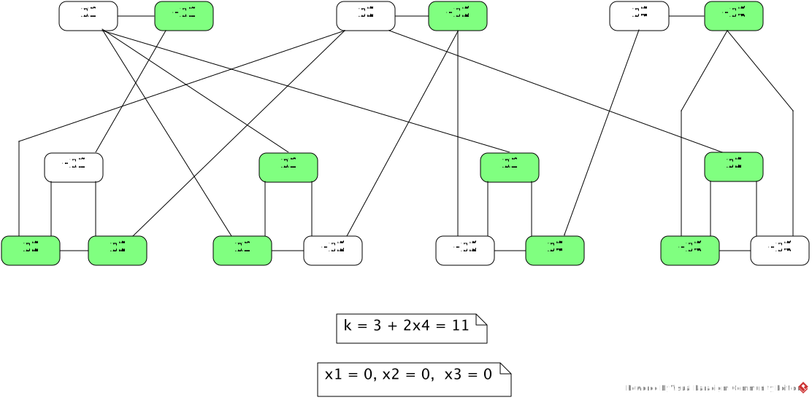
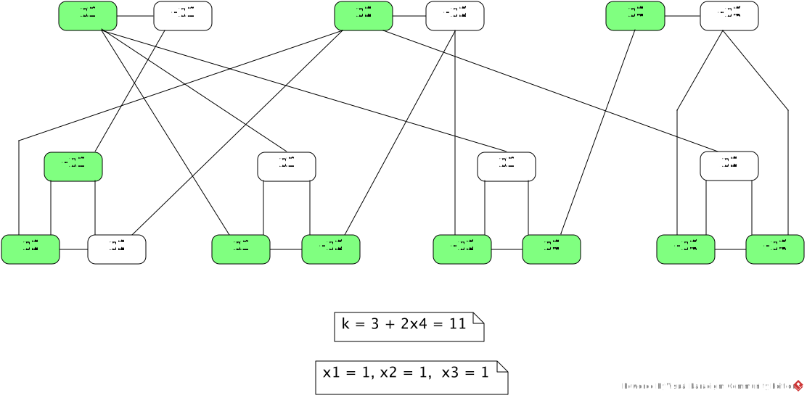
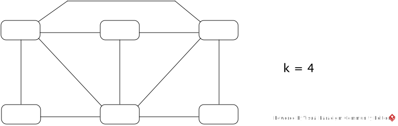

φ = (x1 ∨ x2 ∨ x3) ∧ (¬x1 ∨ x2 ∨ x3) ∧ (¬x1 ∨ x2 ∨ ¬x3) ∧ (x1 ∨ ¬x2 ∨ ¬x3) ∧ (¬x1 ∨ ¬x2 ∨ ¬x3)Here, ¬xi is the negation of xi.
-
Give (Gφ, k) constructed from φ by the reduction.
(Gφ, k) is given in (b) and (c).
-
Give one satisfying assignment for φ, and a corresponding k-vertex cover for Gφ
produced by the equivalence proof.
The 13-vertex cover is shown in green.

-
Give one k-vertex cover for Gφ that is distinct from the one you gave in (b), and
give a corresponding assignment for φ produced by the equivalence proof.
The 13-vertex cover is shown in green.

-
Give the "sum table" constructed from φ by the reduction.
The sum table is given in (b) and (c).
-
Give one satisfying assignment for φ, and a corresponding subset
produced by the equivalence proof.
1 2 3 C1 C2 C3 C4 C5 X1 1 0 0 1 0 0 1 0 ¬X1 1 0 0 0 1 1 0 1 X2 1 0 1 1 1 0 0 ¬X2 1 0 0 0 0 1 1 X3 1 1 1 0 0 0 ¬X3 1 0 0 1 1 1 g1 1 0 0 0 0 h1 1 0 0 0 0 g2 1 0 0 0 h2 1 0 0 0 g3 1 0 0 h3 1 0 0 g4 1 0 h4 1 0 g5 1 h5 1 t 1 1 1 3 3 3 3 3A = { x1 = 0, x2 = 0, x3 = 1 }, S' = { ¬X1, ¬X2, X3, g1, h1, g2, g3, h3, g4, h4, g5 }.
-
Give one subset that sums to t and is distinct from the one you gave in (b), and
give a corresponding assignment for φ produced by the equivalence proof.
1 2 3 C1 C2 C3 C4 C5 X1 1 0 0 1 0 0 1 0 ¬X1 1 0 0 0 1 1 0 1 X2 1 0 1 1 1 0 0 ¬X2 1 0 0 0 0 1 1 X3 1 1 1 0 0 0 ¬X3 1 0 0 1 1 1 g1 1 0 0 0 0 h1 1 0 0 0 0 g2 1 0 0 0 h2 1 0 0 0 g3 1 0 0 h3 1 0 0 g4 1 0 h4 1 0 g5 1 h5 1 t 1 1 1 3 3 3 3 3S' = { ¬X1, X2, ¬X3, g1, h1, g2, g4, h4, g5 }, A = { x1 = 0, x2 = 1, x3 = 0 }.
φ = (x1 ∨ x1 ∨ x2) ∧ (x1 ∨ x2 ∨ ¬x2) ∧ (¬x1 ∨ ¬x2 ∨ ¬x2)
-
Give (Gφ, s, t) constructed from φ by the reduction.
(Gφ, s, t) is given in (b) and (c).
-
Give one satisfying assignment for φ, and a corresponding Ham path from s to t in Gφ
produced by the equivalence proof.
The Hamiltonian path is shown in red.
-
Give one Ham path from s to t that is distinct from the one you gave in (b), and
give a corresponding assignment for φ produced by the equivalence proof.
The Hamiltonian path is shown in red.

If all numbers are represented in unary, the size of the sum table is exponential in the number of literals in the given 3-cnf-formula, so the runtime of the reduction is not bounded by a polynomial.
Let ⟨x1, …, xk, t⟩ be an input where the xi and t are given in unary. Let n = size of ⟨x1, …, xk, t⟩.
Let S(i, j), 0 ≤ i ≤ k, 0 ≤ j ≤ t, be the Boolean function defined by:
S(i, j) = true iff there is a subset of { x1, …, xi } that sums to j.
Then the following recurrence holds:
S(i, 0) = true, 0 ≤ i ≤ k
S(0, j) = false, 1 ≤ j ≤ t
S(i, j) =
(there is a subset of { x1, …, xi−1 } that sums to j) ∨ (there is a subset of { x1, …, xi } using xi that sums to j) =
(there is a subset of { x1, …, xi−1 } that sums to j) ∨ (there is a subset of { x1, …, xi−1 } that sums to j−xi) =
S(i−1, j) ∨ S(i−1, j−xi)
A dynamic programming algorithm can be used to compute S(k, t) by calculating the entries of (k+1) × (t+1) 2-dimensional table in row-major order using the above recurrence. It holds that k ≤ n. Since t is in unary, the value of t is the length of t, hence t ≤ n. The runtime is thus O(k×t) = O(n×n) = O(n2). If the xi and t are encoded by a p-radix notation, p ≥ 2, size(t) ≈ logpt. Hence t = plogpt ≈ psize(t), and the value of t cannot be bounded by a polynomial of the size of ⟨x1, …, xk, t⟩.
If 2 × 2 windows are used, Claim 2 breaks down: Even if the i-th row is a valid configuration and every 2 × 2 window over the i-th and (i+1)-th rows is legal, the (i+1)-th row may not be a valid configuration. For example, let δ(q, b) = { (q', a, L), (q', a, R) }. The following i-th and (i+1)-th rows are allowed:
··· a q b ···
··· q'a q' ···
Every 2 × 2 window over these rows is legal, but the (i+1)-th row is not a valid configuration.
Another example is:
··· b b b ··· q b b ···
··· b q'b ··· a q'b ···
We begin by a description of the reduction of the following example graph G, then generalize.

The four nodes are encoded by 2-bit numbers 00, 01, 10, 11. The following is an adjacency list of G listing all adjacent nodes (a1a2, b1b2):
(00, 01) (00, 10) (01, 00) (01, 10) (01, 11) (10, 00) (10, 01) (10, 11) (11, 01) (11, 10)This adjacency list is encoded by the formula:
adjacent(a1, a2, b1, b2) = (a1=0 ∧ a2=0 ∧ b1=0 ∧ b2=1) ∨ (a1=0 ∧ a2=0 ∧ b1=1 ∧ b2=0) ∨ ... (a1=1 ∧ a2=1 ∧ b1=0 ∧ b2=1) ∨ (a1=1 ∧ a2=1 ∧ b1=1 ∧ b2=0)ai = 0 is expressed by ¬ai and ai = 1 is expressed by ai. Nodes a1a2 and b1b2 are adjacent iff adjacent(a1, a2, b1, b2) is true.
The existence of a 3-clique is encoded by φ with three 2-bit node variables x1y1, x2y2, x3y3:
φ(x1, y1, x2, y2, x3, y3) = adjacent(x1, y1, x2, y2) ∧ adjacent(x1, y1, x3, y3) ∧ adjacent(x2, y2, x3, y3)Then φ(x1, y1, x2, y2, x3, y3) is satisfiable iff there is a 3-clique of nodes x1y1, x2y2, x3y3.
Now the generalization. Let n be the # of nodes of the input graph G. If k > n, G cannot have a k-clique, so the reduction immediately generates a trivial unsatisfiable Boolean formula like x ∧ ¬x. Otherwise, the nodes 0, …, n−1 are encoded by p = ⌈log2n⌉ bits. The adjacency list of n nodes is then encoded by the formula adjacent(a1, …, ap, b1, …, bp) which is a disjunction of 2·e conjunctions, each of which containing 2p literals, where e is the # of edges of G. Each conjunction encodes a pair of adjacent nodes in the manner illustrated in the above example.
The existence of a k-clique is encoded by φ with k p-bit node variables
φ(x11, ..., x1p, ..., xk1, ..., xkp) = ∧adjacent(xi1, ..., xip, xj1, ..., xjp)where the conjunction is formed for all i, j such that 1 ≤ i < j ≤ k.
-
Give the exact number of literals in the above φ for the example graph G and k =3.
φ has (2e)·(2p)·3 = 2·5·2·2·3 = 120 literals.
-
Give the Boolean formula generated from the following instance of CLIQUE by the reduction.
Exactly how many literals does your formula have?


The six nodes are encoded by 3-bit numbers 000, 001, 010, 011, 100, 101. The following is an adjacency list of G listing all adjacent nodes (a1a2a3, b1b2b3):(000, 001) (000, 010) (000, 011) (000, 100) (001, 000) (001, 010) (001, 100) (010, 000) (010, 001) (010, 100) (010, 101) (011, 000) (011, 100) (100, 000) (100, 001) (100, 010) (100, 011) (100, 101) (101, 010) (101, 100)
This adjacency list is encoded by the formula:adjacent(a1, a2, a3, b1, b2, b3) = (a1=0 ∧ a2=0 ∧ a3=0 ∧ b1=0 ∧ b2=0 ∧ b3=1) ∨ (a1=0 ∧ a2=0 ∧ a3=0 ∧ b1=0 ∧ b2=1 ∧ b3=0) ∨ ... (a1=1 ∧ a2=0 ∧ a3=1 ∧ b1=0 ∧ b2=1 ∧ b3=0) ∨ (a1=1 ∧ a2=0 ∧ a3=1 ∧ b1=1 ∧ b2=0 ∧ b3=0)
ai = 0 is expressed by ¬ai and ai = 1 is expressed by ai. Nodes a1a2a3 and b1b2b3 are adjacent iff adjacent(a1, a2, a3, b1, b2, b3) is true.
The existence of a 4-clique is encoded by φ with four 3-bit node variables x1y1z1, x2y2z2, x3y3z3, x4y4z4:φ(x1, y1, z1, x2, y2, z2, x3, y3, z3, x4, y4, z4) = adjacent(x1, y1, z1, x2, y2, z2) ∧ adjacent(x1, y1, z1, x3, y3, z3) ∧ adjacent(x1, y1, z1, x4, y4, z4) ∧ adjacent(x2, y2, z2, x3, y3, z3) ∧ adjacent(x2, y2, z2, x4, y4, z4) ∧ adjacent(x3, y3, z3, x4, y4, z4)
φ has (2e)·(2p)·6 = 2·10·2·3·6 = 720 literals.
-
Give the exact number of literals in φ generated from any graph with n nodes and e edges, and
show that it is bounded by a polynomial of n.
The formula adjacent(a1, …, ap, b1, …, bp) has (2e)·(2p) = 4·e·p = 4·e·⌈log2n⌉ literals. Since φ is a conjunction of k(k−1)/2 "adjacent" formulas, it has (4·e·⌈log2n⌉) × k(k−1)/2 literals. Since k ≤ n, this is ≤ (4·e·⌈log2n⌉) × n(n−1)/2. Since e ≤ n(n−1)/2, it is O(n4·log2n), bounded by a polynomial of n.